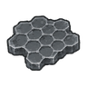
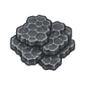
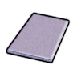
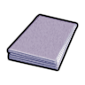
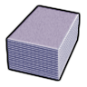
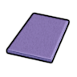
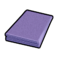
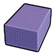
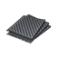
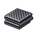

太空Vile本地补丁×1强化工程级·太空·石墨烯气凝胶复合物Aerographene
强化工程级可塑成品 579 件:家具建筑383 · 防具108 · 穿戴件21 · 近战工具54 · 远程武器7 · 其它6
常规硬性件330 + 重机电(舱体/发电机/扫描仪)143 + 轻量塑料件102 + 耐腐蚀设备4
vs 塑料多 131 件(破墙斧、手工装配台…);比钢少 373 件 —— 如 美狐动力爪、盔甲架… 都选不到它
同路径未生效(被覆盖)

aVile's Materials Science
bVile's Materials Science cVile's Materials Science
cVile's Materials ScienceThings/Item/Material/Aerographene StackCount (206,255,203)另有 1 套同名贴图未生效
护甲 1.44/2.10/0.22 利钝 1/0.85 价值 50 质量 0.15 Bulk 0.35
stuff CorrosionResistant, LightMaterial, Plastic, RuggedMetallic, StrongMetallic
HSK Plastics, LightBar, INSBar
产自 Make Aerographene Composite x25(石油化工装置/Petrochemistry VI)
源 Vile's Materials Science
Alloys_HighTech_Composites.xml
太空HSK本地补丁×1上游补丁×3强化工程级·太空·纳米复合物CarbonAlloy
强化工程级可塑成品 579 件:家具建筑383 · 防具108 · 穿戴件21 · 近战工具54 · 远程武器7 · 其它6
常规硬性件330 + 重机电(舱体/发电机/扫描仪)143 + 轻量塑料件102 + 耐腐蚀设备4
vs 塑料多 131 件(破墙斧、手工装配台…);比钢少 373 件 —— 如 美狐动力爪、盔甲架… 都选不到它
① 起点 · Core_SK 的 Defs 写 Things/Item/Material/Nanocomposite

aVile's Materials Science
bVile's Materials Science
cVile's Materials Science② Vile 换成 Things/Item/Material/Nanocomposite (198,184,239) ← Alloys_HighTech_Composites.xml

aVile's Materials Science
bVile's Materials Science
cVile's Materials Science③ 生效(终态) Things/Item/Material/Nanocomposite ← 10_Vile贴图还原.xml

aHSK修复整合 bHSK修复整合
bHSK修复整合
cHSK修复整合Things/Item/Material/Nanocomposite StackCount (198,184,239)被3条配方消耗另有 1 套同名贴图未生效贴图链 3 段
护甲 1.55/1.50/0.15 利钝 1.50/1.20 价值 50 质量 0.25 Bulk 0.35
stuff CorrosionResistant, LightMaterial, Plastic, RuggedMetallic, StrongMetallic
HSK Plastics, LightBar, INSBar
产自 Disassemble AI persona core(精密零件组装机器人/Components II) ; Make Nanocomposite x25(石油化工装置/Petrochemistry VI)
源 Core_SK
Items_Resource_Alloys_Industrial.xml